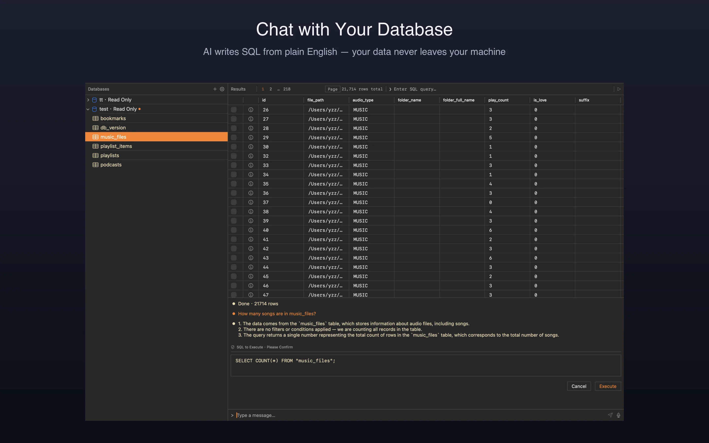

Talk to your database like you'd talk to a colleague. AI generates SQL — your data never leaves your machine.

Describe your goal in plain English. AI generates the SQL and provides a step-by-step execution breakdown — so you always know what's happening before you hit "Run."
Natively supports MySQL, PostgreSQL, and SQLite. Manage multiple connections in a single app and switch freely between them.
Reach databases inside private networks without external VPNs. Enter your SSH credentials once — ASKdb establishes a secure tunnel automatically. Password and public-key auth supported.
Choose your safety level: Read Only, Read & Write, or Full Access. Destructive statements always require explicit confirmation.
Power users can type and execute raw SQL directly. The console coexists seamlessly with the AI chat — mix and match workflows.
Speak your query and let speech-to-text fill in the prompt — hands-free data retrieval.
AI sees your schema structure so it can write correct SQL. AI never sees your data. Your credentials never leave the Keychain. You own every byte.
Only table names, column names, and types are sent to AI. Actual row data is never transmitted.
No bundled cloud provider. You configure your own endpoint and key. Requests go directly from your machine.
No analytics, no telemetry, no usage tracking. The app does not phone home.
Passwords and API keys stored in macOS Keychain — encrypted by the OS, never in plain text on disk.
Get database insights without learning SQL. Ask questions, get answers.
Query quickly without crafting SQL from memory. Speed up your data workflow.
Refuse to send production data to third-party services? ASKdb keeps everything local.